and Frequencies
scipy.signal.convolve2d, moves on to
finite difference operators for image gradients, and finishes with Gaussian smoothing and
Derivative of Gaussian (DoG) filters to get cleaner edges.
Both versions compute a "same" convolution with zero padding, so the
output is the same size as the input. The kernel is first flipped along both axes with
np.flip (a 180° rotation). That flip is what makes this convolution
rather than correlation. The image is then padded by the kernel's radius,
(kh-1)//2 rows and (kw-1)//2 columns on each side, so every
original pixel can sit at the center of the kernel. After padding, the window for
output pixel (i, j) is simply padded[i:i+kh, j:j+kw]. Both
versions assume odd kernel sizes, which covers every kernel used here.
def pad_zeros(im, pad_h, pad_w):
new_h = im.shape[0] + 2 * pad_h
new_w = im.shape[1] + 2 * pad_w
padded_im = np.zeros((new_h, new_w))
padded_im[pad_h : pad_h + im.shape[0], pad_w : pad_w + im.shape[1]] = im
return padded_im
def conv2d_four_loops(im, kernel):
flipped_kernel = np.flip(kernel)
kh, kw = kernel.shape
pad_h = (kh - 1) // 2
pad_w = (kw - 1) // 2
padded_im = pad_zeros(im, pad_h, pad_w)
out = np.zeros(im.shape)
for i in range(im.shape[0]):
for j in range(im.shape[1]):
for kr in range(kh):
for kc in range(kw):
out[i, j] += padded_im[i + kr, j + kc] * flipped_kernel[kr, kc]
return out
def conv2d_two_loops(im, kernel):
flipped_kernel = np.flip(kernel)
kh, kw = kernel.shape
pad_h = (kh - 1) // 2
pad_w = (kw - 1) // 2
padded_im = pad_zeros(im, pad_h, pad_w)
out = np.zeros(im.shape)
for i in range(im.shape[0]):
for j in range(im.shape[1]):
window = padded_im[i : i + kh, j : j + kw]
out[i, j] = np.sum(window * flipped_kernel)
return out
box_filter = np.ones((9, 9)) / 81 # sums to 1, so flat regions keep their brightness
D_X = np.array([[1, 0, -1]])
D_Y = D_X.T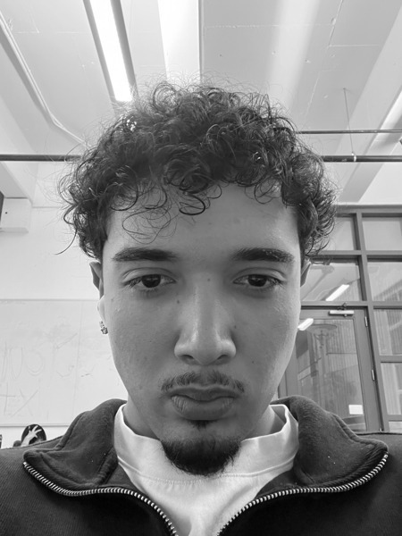
grayscale
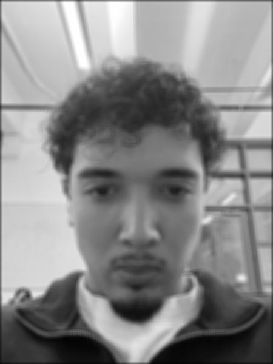
9×9
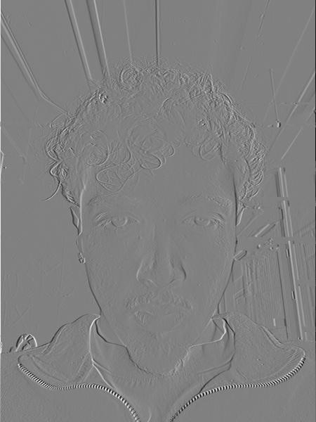
[1, 0, -1]
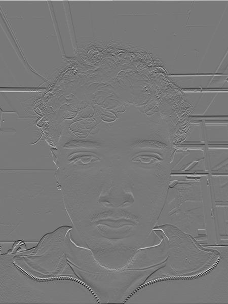
[1, 0, -1]T
The box filter smooths away fine detail such as the hair texture. Dx responds to vertical edges, where brightness changes left to right: the ceiling beams, vertical window frames and the sides of the face and nose. Horizontal window bars almost disappear. Dy does the opposite and picks up horizontal edges: the window bars, eyebrows, eyelids, mouth and collar. The derivative images look embossed because they're signed. For display, 0 maps to mid-gray, positive values are lighter and negative values darker.
| Kernel | four loops | two loops | scipy | max |ours − scipy| |
|---|---|---|---|---|
| box 9×9 | 13.69 s | 1.49 s | 0.048 s | 2.1e-15 / 6.7e-16 |
| Dx 1×3 | 0.69 s | 1.60 s | 0.004 s | 0 / 0 |
| Dy 3×1 | 0.99 s | 1.66 s | 0.009 s | 0 / 0 |
On the 450×600 selfie, compared against
convolve2d(mode="same", boundary="fill", fillvalue=0). Both versions also
matched scipy to within 4e-15 on non-square random kernels (3×5, 7×3).
Both match scipy to within floating-point rounding. For the 9×9 box, two loops is
~9× faster: the 81 multiply-adds run in numpy's compiled code instead of
Python. For the 3-tap Dx/Dy kernels, four loops actually
won. Two loops pays a fixed per-pixel overhead (slicing, temp array,
np.sum) that costs more than 3 plain multiplies. Scipy wins everywhere
because the whole convolution is compiled.
Boundary handling. Zero padding treats everything outside the image as black.
The box filter darkens the border (border mean 0.57 → 0.32), and
Dx/Dy see a fake edge where the image meets the padding, about
20× stronger than a typical real edge (0.66 vs. 0.033). Parts 1.2 and 1.3 avoid
this with scipy's boundary="symm", which mirrors the image instead.
The cameraman image is convolved with Dx and Dy to get the
partial derivatives. At each pixel, (dx, dy) is the gradient vector, and
its length sqrt(dx² + dy²) is the gradient magnitude. That's the
edge strength in any direction. Thresholding the magnitude
(mag > t) gives a binary edge image. All convolutions here use
boundary="symm".
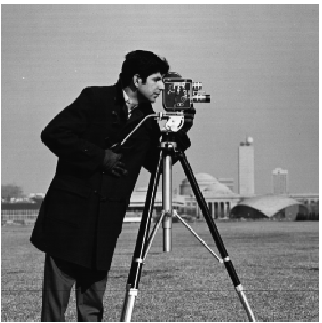
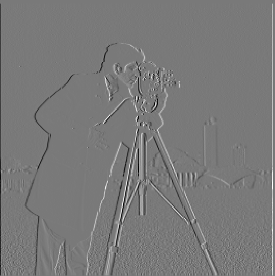
Dx
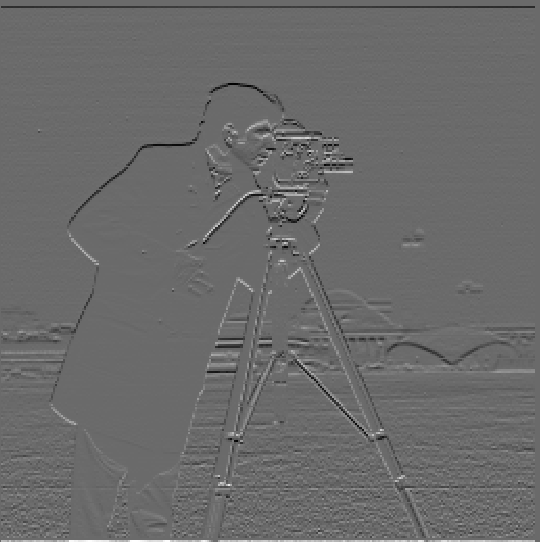
Dy
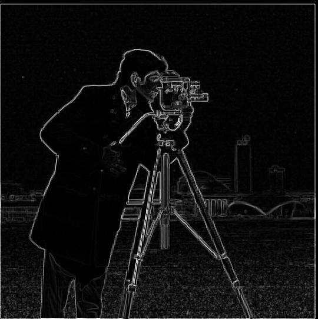
magnitude
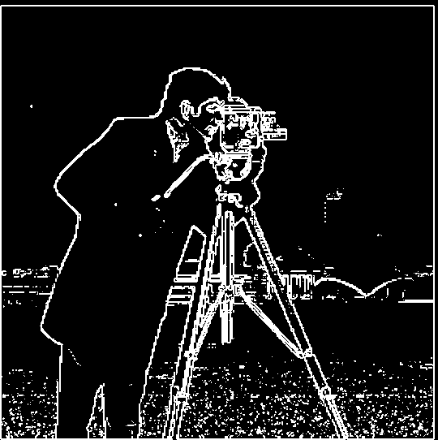
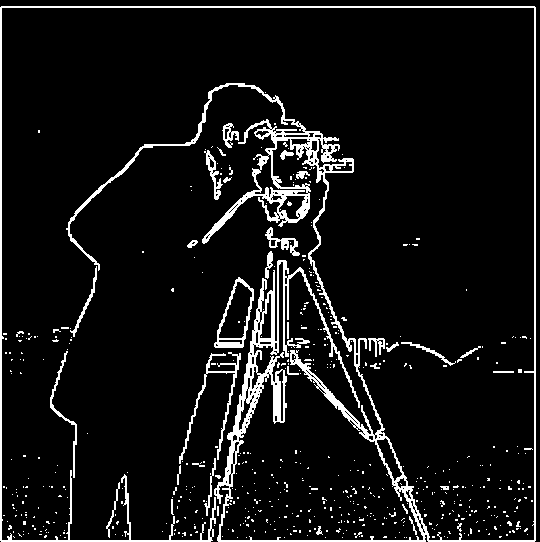
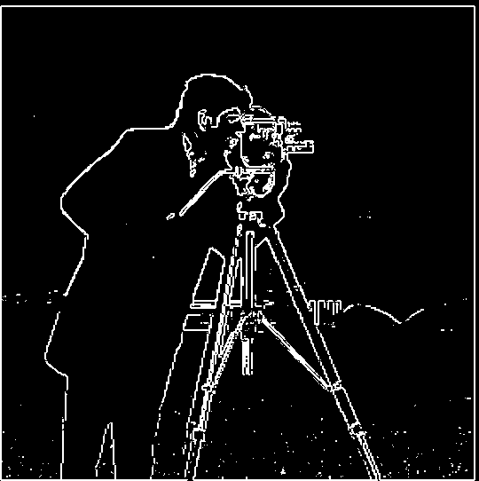
| t = 0.15 | t = 0.20 | t = 0.25 | |
|---|---|---|---|
| Cameraman + camera | solid, extra face/coat detail | solid | solid |
| Tripod legs | continuous | continuous | mostly, small gaps |
| Dome | full arc | most of the arc | right fragment only |
| Horizon / building bases | clearly traced | partly | mostly gone |
| Grass noise | heavy speckle, bottom third | moderate, very bottom | light |
I chose t = 0.20: it keeps the subject, tripod and most background structure while removing most grass noise. No threshold is perfect, because grass texture and the faint buildings have similar gradient magnitudes. This motivates smoothing in 1.3.
Note: the thin frame in the edge images comes from a 1-pixel semi-transparent
border in the provided cameraman.png, not from convolution padding.
The 9×9 Gaussian G is the outer product of cv2.getGaussianKernel(9, 1.5)
with itself. Method 1 blurs the image with G, then runs the 1.2 pipeline.
Method 2 builds the DoG filters G ⊛ Dx and G ⊛ Dy
(mode="full", zero fill, so the whole filter is kept) and convolves the
image with each one once.
G(9, σ=1.5)
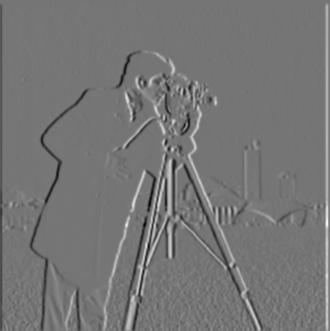
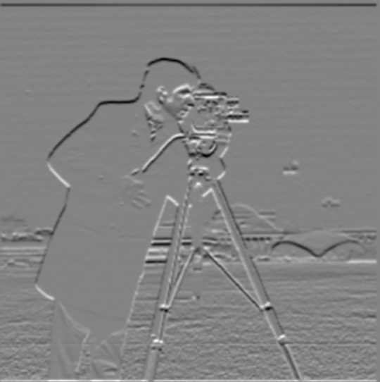

magnitude
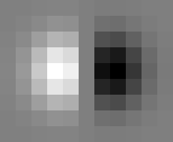
G ⊛ Dx
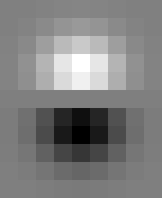
G ⊛ Dy
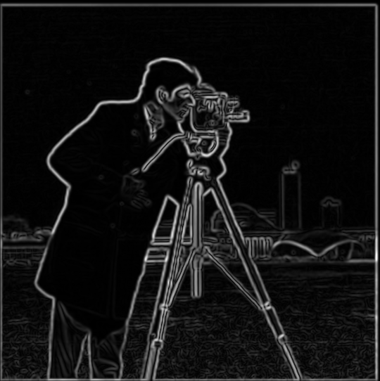
magnitude
Each DoG filter looks like a smoothed [1, 0, -1]: a positive (bright)
Gaussian lobe next to a negative (dark) one.
Verifying the two methods match. Convolution is associative, so (im ⊛ G) ⊛ D = im ⊛ (G ⊛ D). The maximum absolute differences between the methods are:
| interior (10 px border excluded) | whole image | |
|---|---|---|
| dx | 7.1e-16 | — |
| dy | 7.7e-16 | — |
| magnitude | 7.2e-16 | 7.2e-16 |
The methods match everywhere, including the border. The only differences are floating-point rounding. I expected the border to differ, since Method 1 mirrors the image twice and Method 2 mirrors it once. But the Gaussian is symmetric, so mirroring before blurring or after blurring gives identical values at the edge.
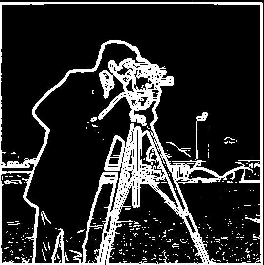
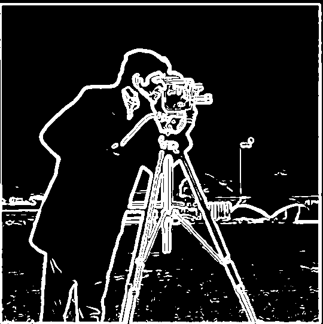
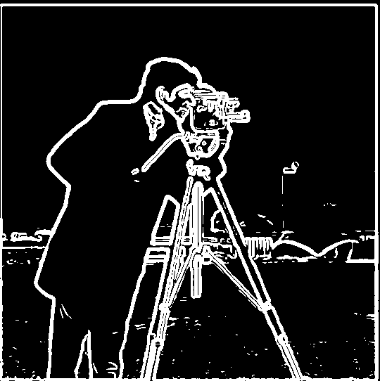
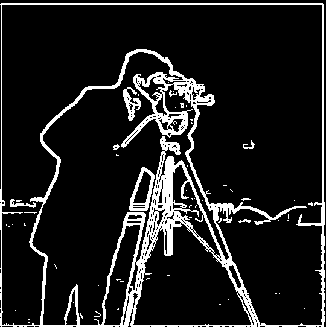
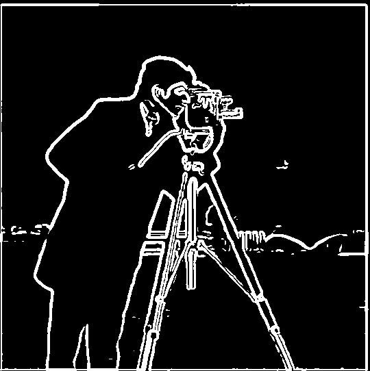
| t | Grass | Dome | Tower | Horizon |
|---|---|---|---|---|
| 0.05 | heavy, blobby texture | full | visible | full |
| 0.06 | light scattered speckle | nearly full arc | left edge + top | clear |
| 0.07 | lighter speckle | most of the arc | partial | clear |
| 0.08 | almost clean | partial | gone | partial |
| 0.10 | clean | fragment | gone | partial |
I chose t = 0.07, using the same reasoning as in 1.2: keep most of the background structure (dome, horizon, part of the tower) and accept a little grass speckle. Blurring changes the magnitudes a lot, so the threshold is much lower than 1.2's 0.20.
t = 0.20
t = 0.07
Smoothing makes the edges thicker and smoother and the grass much quieter. The blur squeezes the grass texture into a narrow band of low magnitudes while real boundaries stay strong, so a threshold can now separate them. That's why the grass almost vanishes between t = 0.05 and 0.08. The tradeoff is precision: edges are a few pixels wide instead of one.